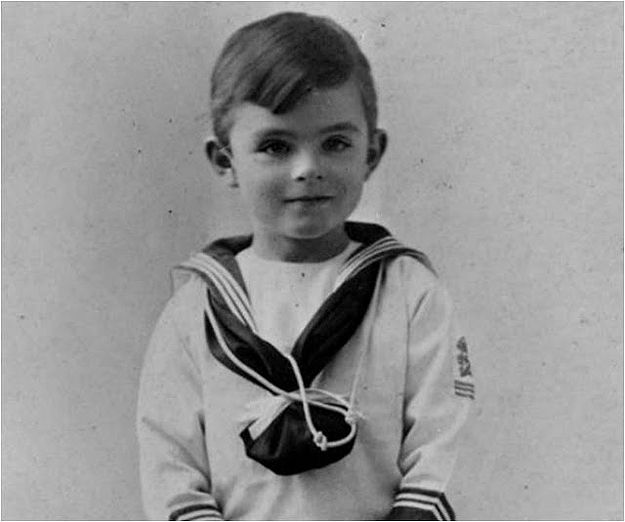

"If a machine is expected to be infallible, it cannot also be intelligent."

History
Alan Turing was deemed a genius at the age of 9 by his headmistress.
He gained interest in chess and started working out complex chess problems on his own at the age of 10.
He always managed to receive high marks in exams despite never paying attention to lessons.
After his schooling at Sherborne when he was 13, he discovered his interest in math and science.
Turing enrolled at University of Cambridge and studied there from 1931 to 1934 where he proved the central limit theorem and elected a fellow at the school.
In 1936, Turing studied mathematics at Princeton University in New Jersey, obtaining his Ph.D in 1938.
Accomplishments
During Alan Turing’s time at Princeton, he created the idea of a ‘universal computing machine’ capable of solving complex calculations. This machine would be known as the ‘Turing machine’ which is the foundation predecessor to the digital computer.
He also studied cryptology which is the study of secret codes and cyphers.
Turing was asked to partake in the Government Codes and Cypher School which was a British code-breaking organization located in Bletchley Park.
His most recognizable achievement at Bletchley was when he cracked the Enigma code which was used by German armed forces to send messages securely.
With the collaboration of code-breaker Gordon Welchman, Turing created the Bombe. This 1940s machine was decoding messages sent by the Enigma machines
Turing started cracking more complex German naval signals with his Hut 8 team at Bletchley and proved successful in decrypting these signals in 1941, contributing to the Allied victory in the Battle of the Atlantic.
In 1942, Turing developed a complex code deciphering method named Delilah. This system encoded and decoded voice communications and was intended to be used like a telephone scrambler.
In 1945 Turing was awarded an OBE for his efforts to the country.
In 1949 he was made the deputy director of the Computing Laboratory at the University of Manchester.
In 1950, Alan Turing addressed the idea of Artificial Intelligence.
Turing was charged with gross indecency due to anti-homosexuality laws in the UK at the time. This led to Turing’s security clearance at Government Codes and Cypher School to be revoked and no longer continued his work there.
On June 7th 1954, Turing was found dead from cyanide poisoning which was ruled as suicide, but recently it is disputed that his death may have been at cause of accidental inhalation of cyanide fumes during an expirement.